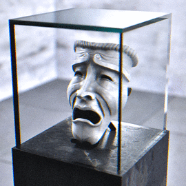

SCP-035

- Item nº:
- SCP-035
- Classe do objeto:
- Keter
Procedimentos Especiais de Contenção:
O SCP-035 deve ser mantido dentro de um estojo de vidro hermeticamente selado, com no mínimo 10 centímetros (4 polegadas) de espessura. Esse estojo deve ficar o tempo todo dentro de uma sala blindada com aço, ferro e chumbo. As portas devem estar sempre com trava tripla, exceto para permitir a entrada e a saída de pessoal. No mínimo dois (2) guardas armados devem estar posicionados o tempo todo. Os guardas devem permanecer o tempo todo do lado de fora e não têm permissão para entrar na sala de contenção em nenhuma circunstância. Um psicólogo treinado deve permanecer no local o tempo todo. O pessoal de pesquisa não deve tocar no SCP-035 em nenhum momento. O SCP-035 deve ser transferido para um novo estojo selado a cada duas (2) semanas. O estojo anterior deve ser descartado por meio do SCP-101, pois ele não mostra reações adversas à "corrupção" do SCP-035. Qualquer pessoa que entrar em contato com o SCP-035 quando ele estiver de posse de um hospedeiro deve receber uma avaliação psicológica imediata.
Descrição:
O SCP-035 parece ser uma máscara de porcelana branca de comédia, embora, às vezes, mude para tragédia. Nessas ocasiões, todos os registros visuais existentes, como fotografias, filmagens e até ilustrações do SCP-035, mudam automaticamente para refletir sua nova aparência.
Um líquido viscoso altamente corrosivo e degenerativo escorre constantemente dos buracos dos olhos e da boca do SCP-035. Tudo o que entra em contato com essa substância apodrece lentamente ao longo de um período, dependendo do material, até se decompor por completo em uma poça do contaminante original. O vidro parece reagir mais lentamente aos efeitos do item, daí a escolha de construção de seu recipiente imediato. Os organismos vivos que entram em contato com a substância reagem da mesma forma, sem chance de recuperação. A origem do líquido é desconhecida. O líquido só é visível pela frente e não sai nem é visível pelo outro lado.
Os sujeitos a menos de 1,5 a 2 metros (5-6 pés) do SCP-035, ou em contato visual com ele, sentem um forte impulso de colocá-lo. Quando o SCP-035 é colocado no rosto de um indivíduo, um padrão alternativo de ondas cerebrais do SCP-035 se sobrepõe ao do hospedeiro original, apagando-o efetivamente e causando morte cerebral no sujeito. O sujeito então afirma ser a consciência contida no SCP-035. Os corpos dos sujeitos "possuídos" apodrecem em ritmo muito acelerado, tornando-se por fim pouco mais que cadáveres mumificados. Mesmo assim, o SCP-035 demonstrou a capacidade de manter o controle cognitivo de um corpo que sofre graves danos estruturais, mesmo que o corpo do sujeito se decomponha literalmente a ponto de o movimento não ser mecanicamente possível. Não se constatou nenhum efeito ao colocá-lo no rosto de um animal.
As conversas com o SCP-035 se mostraram informativas. Os pesquisadores aprenderam vários detalhes sobre outros objetos SCP e sobre a história em geral, já que o SCP-035 afirma ter estado em muitos eventos marcantes. O SCP-035 exibe uma personalidade altamente inteligente e carismática, sendo amigável e lisonjeiro com todos que falam com ele. O SCP-035 obteve pontuação no percentil 99 em todos os testes de inteligência e aptidão aplicados e parece ter memória fotográfica.
No entanto, a análise psicológica descobriu que o SCP-035 possui uma natureza altamente manipuladora, capaz de forçar mudanças súbitas e profundas no estado psicológico do entrevistador. O SCP-035 mostrou-se altamente sádico, levando alguns ao suicídio e transformando outros em servos quase sem mente apenas com persuasão linguística. O SCP-035 declarou ter conhecimento íntimo do funcionamento da mente humana e deu a entender que poderia mudar as opiniões de qualquer pessoa, se tivesse tempo suficiente.
Adicional: O SCP-035 foi encontrado em uma cripta selada em uma casa abandonada em Veneza, em 18██.
Adendos
Adendo 035-01: Descobriu-se que o SCP-035 consegue possuir qualquer coisa que tenha forma humanoide, incluindo manequins, cadáveres e estátuas. O SCP-035 conseguiu movimentar todos eles, eliminando a necessidade de expor sujeitos vivos ao SCP-035. Ainda assim, tudo o que ele possui inevitavelmente decai até a imobilidade.
Adendo 035-02: O SCP-035 facilitou uma tentativa de fuga, convencendo vários membros da equipe de pesquisa a ajudá-lo em sua busca por liberdade. A insurreição fracassou. Todo o pessoal que teve contato com o SCP-035 foi eliminado, e avaliações psiquiátricas obrigatórias foram implementadas para todo o pessoal que entra em contato com o SCP-035.
Adendo 035-03: Determinou-se que o SCP-035 é capaz de telepatia, esteja ou não de posse de um hospedeiro, chegando a penetrar no subconsciente dos outros e usando o conhecimento que encontra em seu benefício. Recomenda-se extrema cautela na escolha dos sujeitos para conversar com o SCP-035.
Adendo 035-04: O SCP-035 expressou interesse em outros SCPs, principalmente o SCP-4715 e o SCP-682. O Dr. ██████ manifestou preocupação de que, se o SCP-035 se unir a qualquer um dos dois, suas qualidades regenerativas anulariam a corrupção e lhe dariam um hospedeiro permanente.
Adendo 035-05: Após várias outras tentativas de fuga, e após rever o registro de incidentes do SCP-035, o alto comando ordenou que ele seja selado permanentemente dentro da instalação e proibido de receber mais hospedeiros. Vários funcionários protestaram contra isso, e alguns chegaram a explodir em violência. Como resultado direto, todo o pessoal que entrou em contato com o SCP-035 foi eliminado. Daqui em diante, todo o pessoal que lida com o SCP-035 deve ser rotacionado com frequência, e o contato, mesmo com seu estado dormente, deve ser limitado ao mínimo possível.
Adendo 035-06: O pessoal a até 10 metros do SCP-035 relatou recentemente sentir mal-estar, dizendo que ouve sussurros ininteligíveis. Vários outros sofreram enxaquecas graves. O objeto foi monitorado, mas não há mudança em seu comportamento dormente, e nenhum som foi registrado.
A moção para restabelecer os privilégios de hospedeiro do SCP-035 foi levantada mais uma vez, ainda que apenas de forma temporária, para descobrir essas novas mudanças no comportamento do objeto. (Negada)
Adendo 035-07: As paredes da cela de contenção do SCP-035 começaram de repente a secretar uma substância negra. Os testes da substância revelaram que é sangue humano, embora altamente contaminado com vários agentes estranhos e desconhecidos. A substância é corrosiva, com pH de 4,5, e a exposição prolongada às paredes mostrou-se prejudicial à sua integridade estrutural.
Mais notavelmente, ela parece formar padrões nas paredes. Vários trechos parecem parágrafos em diversos idiomas, incluindo italiano, latim, grego e sânscrito. A tradução está pendente. Outros trechos parecem diagramas que retratam sacrifícios rituais e mutilação, geralmente em benefício arcano de quem os comete. Vários membros da equipe ficaram chocados ao notar que todos os sacrifícios têm uma semelhança estranha com diversos funcionários e seus entes queridos, muitas vezes em posições conflitantes.
Os pesquisadores que estiveram na sala examinando esses padrões recém-formados reclamaram de ouvir sussurros altos e uma risada aguda e perturbadora em intervalos irregulares.
O pessoal da seção que trabalha diariamente perto e ao redor da unidade de contenção do SCP-035 sofreu danos catastróficos no moral, com a maior taxa de suicídios da história entre a equipe daquela área, tenham ou não tido contato com o SCP-035.
A única mudança no comportamento dormente do SCP-035 diz respeito ao seu estojo de vidro. A degradação do estojo aumentou em alto grau, a ponto de o vidro se estilhaçar ocasionalmente, causando ampla dispersão do contaminante do SCP-035. Isso ocorre com bastante frequência nos momentos mais inoportunos, resultando até agora em seis (6) feridos e três (3) mortos entre a equipe de pesquisa e de limpeza.
Adendo 035-08: À luz do suicídio/homicídio em massa dos membros da equipe de pesquisa encarregada de traduzir as passagens obtidas na cela de contenção do SCP-035, do dano ao moral na área e da perda geral de funcionários que lidam com o SCP-035, seja por morte ou por insanidade, decidiu-se revestir as paredes internas e externas de sua cela de contenção com o SCP-148, que se mostrou eficaz na contenção do SCP-132-ARC (ver Documento 132-01), na esperança de bloquear os altos níveis de negatividade emitidos pelo SCP-035.
Adendo 035-09: O uso do SCP-148 funcionou bem, fazendo o moral e as taxas de suicídio voltarem a níveis próximos aos anteriores ao SCP-035.
No entanto, o material parece facilitar a negatividade dentro da cela, causando um verdadeiro "Efeito Estufa" no interior. O pessoal dentro da cela afirmou sentir um pesado sentimento de pavor, medo, raiva e depressão geral, além de ouvir sussurros constantes, quase inaudíveis, logo na entrada. Uma permanência prolongada causa enxaquecas graves, tendências suicidas, forte hemorragia dos vasos sanguíneos ao redor dos olhos e dentro da boca e do nariz, hostilidade geral contra os outros e o aumento dos sussurros a volumes quase ensurdecedores, entrecortados por uma risada constante de zombaria. A exposição por mais de três (3) horas resulta inevitavelmente em uma psicose profunda, com tentativas de ferir a si mesmo ou aos outros. A maioria falou em latim ou grego, embora vários deles não soubessem falar essas línguas antes.
A presença de sangue, tanto em palavras quanto em diagramas, aumentou de forma desproporcional, com as paredes ficando cheias e as formações começando a se sobrepor. A substância mostrou-se difícil de limpar e ainda mais corrosiva do que o registrado originalmente, com pH de aproximadamente 2,4. A estimativa geral dá às paredes atuais uma vida útil de dois (2) meses antes de precisarem de substituição.
Está ficando cada vez mais difícil conter o SCP-035, e o debate para restabelecer seus privilégios de hospedeiro voltou a surgir. (Negado)
Adendo 035-10: As paredes, o teto e o piso da cela de contenção do SCP-035 estão agora completamente saturados de sangue. Todo o pessoal que entra na área e a vigia deve usar trajes Hazmat completos. Esforços constantes de limpeza estão sendo instituídos.
Adendo 035-11: A magnitude, a intensidade e a recorrência dos fenômenos que ocorrem dentro da cela de contenção do SCP-035 aumentaram a um nível alarmante. A porta da cela já trancou por conta própria enquanto havia pessoal dentro, ficando impossível de abrir por um período. Apêndices se formam nas poças maiores de sangue e muitas vezes tentam agarrar ou ferir o pessoal próximo. Aparições borradas começaram a aparecer para a equipe. Os dispositivos eletrônicos não funcionam mais dentro da cela, e a luz não pode ser acesa, embora não haja nenhuma razão física para que não funcione, obrigando quem entra a usar fontes de luz não elétricas.
As medidas de limpeza não têm efeito perceptível sobre a cela, e as paredes estão se degradando em ritmo muito alto, exigindo substituição em uma semana, na melhor das hipóteses, embora o sangue torne quase impossível realizá-la de forma adequada.
Talvez seja necessário transferir o SCP-035 para uma cela totalmente nova, com a antiga selada e desligada do restante da instalação.